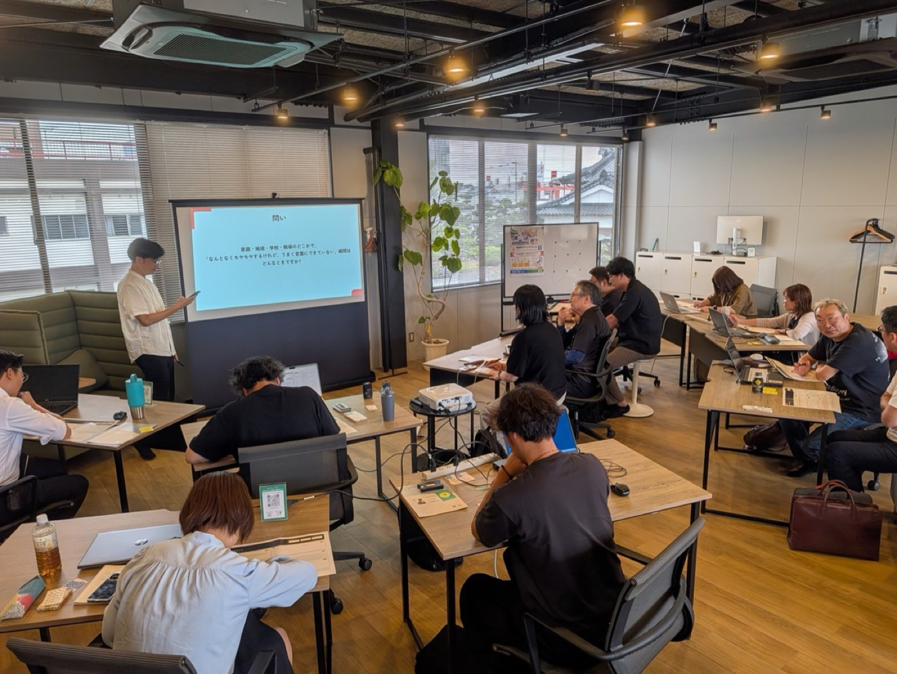
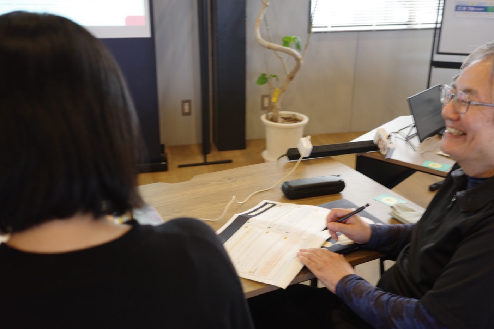
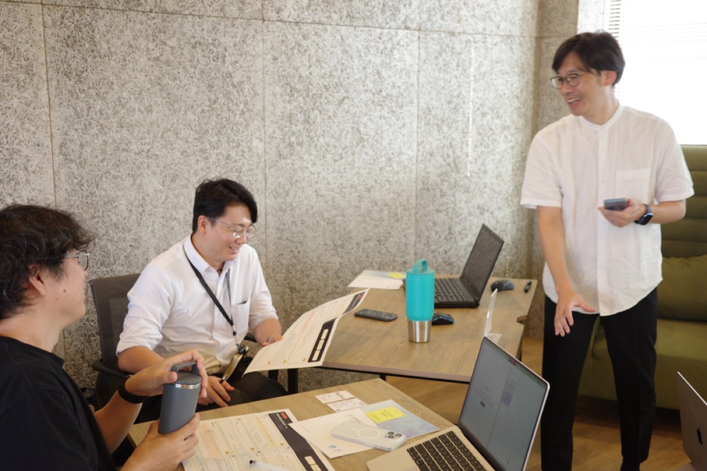
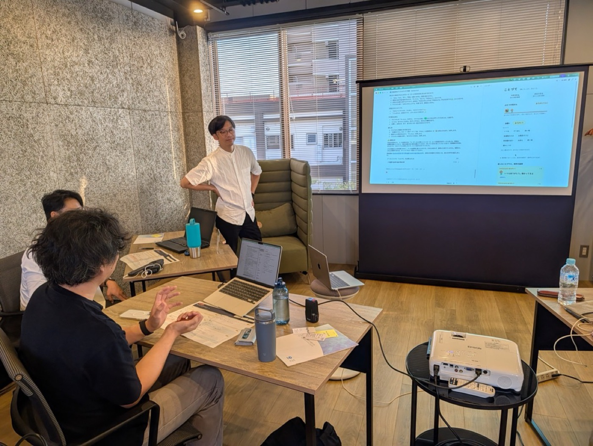
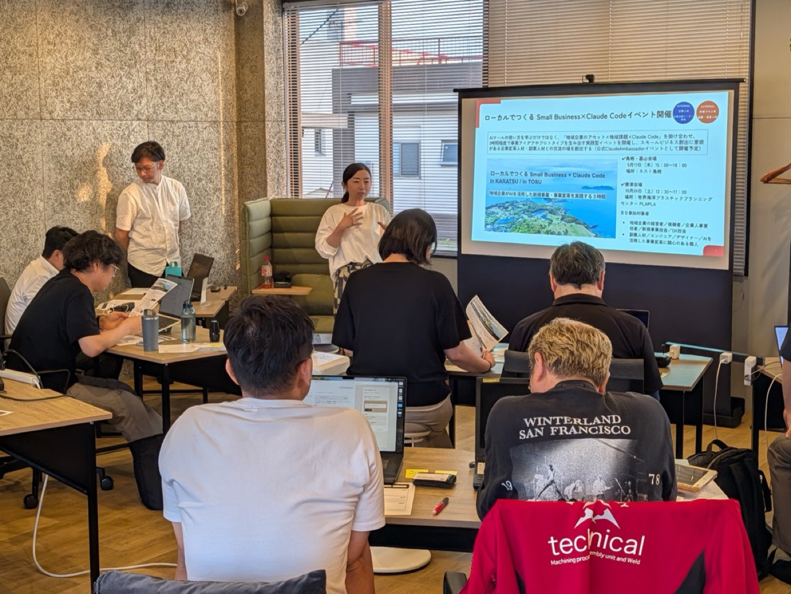

ローカルでつくる Small Business
2026年9月17日（木）15:00〜18:00／ネスト鳥栖（NesXt TOSU）・佐賀県鳥栖市 主催＝一般社団法人InnoDrops ／ Claude Community Ambassador 西信好真
この日のプログラムについて
Claudeにいきなり触らず、紙でしっかりと作るものを固める
3時間のうち最初の1時間半は、ペアを組んだ相手の困りごとに耳を傾ける時間に充てました。Claude Codeの画面を開いたのは、相手の抱える「課題」がワークシート上で整理できてからでした。
自分ではなく、隣に座る相手の悩みを解決するアプリをつくる
開発のテーマは、参加者同士が持ち寄ったリアルな日常の困りごと。作ったその場で本人にアプリを使ってもらい、率直なフィードバックを受け取り改善を行いました。
3時間の講座中に、実際に動くアプリが完成
夫婦間での家事の頼みごとを送り合うアプリや、朝の持ち物忘れを防ぐアプリ。最後の発表会では、実際の画面を動かしながら発表しました。
受講後アンケート結果では多くの参加者に行動変容の兆しが
終了後のアンケート（回答者11名）では、満足度が平均4.64点（5点満点）。11人中9人が「AIを使って取り組みたいことがある」と回答し、そのうち5人はすでに実務上で使える具体的なアイデアまで思い描いていました。
3時間のセミナーのタイムテーブル

このワークショップの狙いは、単にClaude Codeの操作方法を覚えることではありません。地域の企業や個人が、自分たちの強み（アセット）を活かして新しい事業の種を作るきっかけにしてもらうことを目指しました。
| 時刻 | 内容 |
|---|---|
| 15:00 | 開場・オープニング。ペアでの自己紹介後、「なぜ地域でスモールビジネスなのか」という話題からスタート。 |
| 15:15 | デザイン思考の導入。9つの点を4本の直線で結ぶパズルで「枠の外に出る」練習をしてから、共感・定義・概念化・試作・検証の5段階の説明 |
| 15:45 | 相互インタビュー。ワークシートに自分の「もやもや・悩み」を書き、ペアで10分ずつ聞き取る |
| 16:10 | 聞き取った話の奥にある本音を言葉にする。「口にしていることと、本当に引っかかっていることは違う」。 |
| 16:15 | ペルソナと課題定義。同じ引っかかりを持つ人は他にどれくらいいるか |
| 16:25 | 休憩。あわせて Anthropic から提供された APIクレジットを案内。 |
| 16:35 | Claude Codeで実装スタート。埋まったワークシートを設計図に、適宜ペアの相手からフィードバックをもらいながら進める。 |
| 17:25 | 全体での発表。 |
| 17:40 | 次回、唐津開催回（10月24日）と、11月から始まる事業共創プログラムの案内 |
| 17:55 | 終了 |
「地域でのスモールビジネス」の具体例として
冒頭では、当日のテーマをイメージしやすいよう、長崎県佐世保市でのClaude活用の事例が紹介されました。就労支援事業所を営む石丸徹郎さん（ISIAL）が立ち上げた「エールリンク」という取り組みです。
地元のクラブチームのTシャツを購入すると、売上の一部が活動資金としてチームへ還元され、商品の制作は就労支援事業所の利用者さんが担います。買い手は応援の気持ちとともに愛着の持てる服を手に入れ、福祉現場には仕事が生まれ、チーム側も後ろめたさなくファンへ購入を案内できる——関わる三方が自然とつながる設計です。
事例を紹介した小山さんが特に注目したのは、「このアイデアがどこから生まれたのか」という視点の動かし方でした。
「『福祉事業所のこのビジネスをどう伸ばそうか』という発想からスタートすると、たぶんここには行き着かないんですよね。関わっている人や、実際に服を着る人たちの困りごとを別の視点から捉え直していくと、パズルのピースがピタリとはまる。しかも今の時代、Claudeを使えば、そのアイデアを3日で形にできてしまうんです」
「既存事業の延長で新しいことを始めよう」と構えてしまうと、どうしても枠の内側にとどまりがちです。小山さんはこれを視点の「捉え直し」と表現し、参加者にも同じ意識を持ってもらうよう呼びかけました。普段向き合っているクライアントや顧客を、少し角度を変えて眺めてみるだけで、リアルな生活者の顔が浮かび上がってくる。
後半の実装パートで参加者たちが向き合ったのも、まさにこの「身近な誰かの困りごとを捉え直す」プロセスそのものでした。
「大きなビジネスの価値はもちろん否定しません。ただ、地域に根ざした小さなビジネスを、ほとんどコストをかけずに自分たちの手で立ち上げられる世の中になってきています。それこそが、現場と距離が近いローカルで動く私たちの、何よりの強みになると信じています」
— 小山直子さん
Claude Code を開く前に、課題の整理に使った1時間半
ワークショップの前半は、ほぼ全員がパソコンを横に置いたまま進行しました。投げかけられた問いは、極めてシンプルです。
家庭・地域・学校・職場のどこかで、 「なんとなくモヤモヤするけれど、うまく言葉にできていない」瞬間は どんなときですか?
— 当日の投影スライドより
参加者は配られたA3用紙の「もやもや探検シート」に日常の違和感を書き出し、ペアを組んだ相手と10分ずつインタビューし合います。聞き手に求められるのは、相手が口にした言葉をそのまま受け取るのではなく、「その裏で何が引っかかっているのか」を掘り起こして一言にまとめることでした。
進行役の猿渡さんは、「家族のために弁当を買って帰ったのに、誰も手をつけなかった」という自身の身近な体験を例に挙げました。表面的には「食べてもらえなかった」という出来事ですが、本当の違和感は別の感情にあった——そんな身近なズレを通して、本音をすくい上げるコツを伝えます。


この1時間半の作業について、後半のパートに入る直前、猿渡さんがこう言葉を添えました。
「実は、ここがAIには絶対にできない領域なんです。その場の空気感や表情、声のトーンまでは読み取れません。この『感情を言語化するプロセス』だけは人にしかできず、だからこそ次のAIでの実装フェーズで大きな力を発揮します」
事後アンケートでも、全4パートの中で最も満足度が高かったのがこのデザイン思考のパートでした（5点満点中 4.73）。「AIに触る前に、まずは自分の頭でとことん考える大切さがわかった」「相手の言葉の奥にある本質を汲み取る難しさと面白さを感じた」といった感想が寄せられています。
ワークシートが埋まってから、Claude Code を開く
後半はいよいよ、書き溜めたワークシートをClaude Codeに渡して実装に入ります。中には手書きのシートをスマートフォンで撮影し、そのまま画像として読み込ませた参加者もいました。文字を的確に読み取り、要件定義までスムーズに進めていくClaudeの様子に、参加者からは驚きの声も聞かれました。
進行役からのアドバイスも、技術的な操作方法というよりは「AIとの向き合い方」に重きが置かれました。
「『相手の課題を整理して、解決するアプリを作りたい』と前提を伝えてみてください。その上で、背景やペルソナをメモ書き程度でいいので共有する。そして『どんなアプリが作れそう？』とAIに相談しながら、壁打ちするように進めるのがコツです。インタビューで感じた生々しい感情やニュアンスもそのまま伝えると、AIは驚くほど意図を汲んでくれます」

このワークショップの面白さは、「作ったアプリを届けたい相手がすぐ隣に座っていること」です。相手の悩みを考えながら作り、出来上がった瞬間に隣でテストしてもらえる。会場からは、こんな声も聞こえてきました。
「これ、めちゃくちゃ楽しいですね。ファーストユーザーがすぐ隣にいる。自分のためだけに作っていても味気ないけれど、目の前にいる誰かのために手を動かす体験はすごく新鮮です」
3時間でできあがったもの

最後には、制作したアプリを全体で発表する時間を設けました。参加した2名が発表したアプリは、どちらも相手のリアルな日常の困りごとに向き合う内容でした。
発表（1）：家事の頼みごとを、一言で送り合うアプリ
出発点は「洗濯物」にまつわる不満でした。自分は相手の服もたたむのに、相手はやってくれない。深掘りしていくと、課題は2点ありました。「家事の分担ルールが曖昧なこと」、そして不満顔の相手に「怒ってる？」と聞いても「怒ってない」と返ってきてしまい、感情の共有がうまくいかないことです。
ターゲットは共働き・子育て中の30代後半の夫婦。日によって忙しさも体力も違うため、ガチガチの当番表を作っても続きません。最初はメッセージアプリ風に作り始めましたが、「文字を打つ手間があると結局使われなくなる」と判断し、操作を極限までシンプルに削ぎ落としました。
画面には「ゴミ出し」「洗い物」「洗濯物たたみ」「お風呂そうじ」「保育園の送り・迎え」「買い物」「寝かしつけ」といったボタンが並び、1タップで依頼文が完成します。受け取った側も「やる」「あとで」「今日は無理」の3択でサッと返信。完了したら「ありがとう」をワンタップで送れます（定型にない要望は自由入力や音声入力にも対応）。
制作の過程で、面白い変化もありました。当初は感謝を送ると「ポイント」が貯まる仕組みでしたが、作者が「これじゃ情緒がない。もっと気持ちが通い合うようにして」とClaudeに伝えたところ、画面に花が咲くデザインへと変化。5つ貯まると花束になる演出が自然と組み込まれました。花を咲かせるアイデアは指示したものではなく、Claude側の提案です。アプリ名もClaudeの案を採用し、発表者が手を入れたのは「『察して』より、ひとこと。」というキャッチコピーだけでした。
発表（2）：朝、傘を持ったか確認するアプリ
こちらのアプリは、「出先で急な雨に降られるとコンビニでビニール傘を買い足してしまい、玄関に傘が溜まっていく」という日常のストレス。本音を探ると「そもそも余計な傘を持ち歩きたくない」という点に行き着き、移動が多い30〜40代の営業職を想定して開発が進みました。
目指したのは「雨を予報するアプリ」ではなく、「朝の持ち物を忘れさせないアプリ」です。降水確率が一定を超える日の朝、傘と財布を持ったかだけを確認し、完了ボタンを押すシンプルな設計にしました。Claudeはまず画面のワイヤーフレームを提示して「こんなレイアウトでどうですか？」と確認を入れてからコードを書き始めており、前半で学んだペーパープロトタイプの手順をAI自身が自然となぞっていたのが印象的でした。
発表後のフィードバックでは、「遠慮せずにどんどん要望をぶつけること」の大切さが共有されました。
「要望をためらわずに伝えるほど、アウトプットの精度は上がります。『家族で使いたいからネットに公開して』『家族以外に見られないようパスワードをかけて』『スマホで見にくいから直して』と、気がついた要望を次々にぶつけていく。ある意味、自分のワガママを正直に投げ込むのが一番の近道です」
発表中には「作業の途中でボタンが消えてしまった」というリアルなトラブルも共有され、そこから以下のような実践的なノウハウが挙げられました。
「この機能は残したまま」とプロンプトに明記する（予期せぬ仕様崩れを防ぐ）
一度に全部作らせず、機能を3〜5段階に分けて1つずつ実装する
理想のデザインに近い参考画像やWebサイトのURLを渡す
参加者の反応
事後アンケート n=11（2026年9月22日時点）
| 指標 | 値 | 備考 |
|---|---|---|
| 全体満足度 | 4.64／5 | 最高評価 8件 |
| 推奨意向 | 4.55／5 | 最高評価 8件 |
| 行動意向あり | 9／11 | うち5件は具体的な計画あり |
カリキュラム別では、デザイン思考（4.73）が最も高く、インタビュー実践・相互シェア（ともに4.64）、Claude Code体験（4.55）と続きました。回答者のうち7名がすでにClaudeに触れたことがあり、そのうち6名は業務で日常使いしている層でした。
自由記述では、ツールの性能だけでなく「相手と向き合って課題を掘り下げるプロセス」についての感想が目立ちました。
「アプリもシステムも、『誰に届けるか』を解像度高く想像することが何より重要で、これは新規事業づくりにもそのまま通じると感じました。自分の頭の中だけで終わらせず、外に発信して誰かに使ってもらう挑戦をもっとやってみます」
「アプリ制作は初めてで、何から手をつければいいか悩みすぎて一歩が踏み出せずにいました。身近なモヤモヤを解くという切り口のおかげで、終始楽しく手を動かせました。届けたい相手の顔が見えていると、こんなにも手が止まらないものなんですね」
一方で、日常的にClaudeを使いこなしている参加者3名からは「もっと時間が欲しかった」という声も。「あれもこれもと機能を詰め込みすぎて時間内に収まりきらなかった。一番届けたい機能だけに絞り込むステップがあると、時間内で完成度を上げられたかもしれない」といった、実践者ならではの前向きなフィードバックも寄せられています。
※アンケートは9月24日まで回答を受け付けているため、数値は速報値です。
当日に出た新しく重たい問い
終盤、主催である一般社団法人InnoDrops 代表理事・小山直子さんが投げかけた問いが、印象に残っています。長年にわたり高校生や若者の探究学習に伴走してきた立場だからこその、自己反省を含んだ言葉でした。
「いま世間では『子どもたちにどうAIを使わせるか』ばかりが議論されています。でも本当は、大人側のほうが本質を見失っているのではないでしょうか。さっきの実装中も、みなさんが指示していないのにAIが気を利かせて勝手に作ってくれた機能がたくさんありましたよね。
去年までは、教育プログラムで関わる高校生たちに話を聞くとみんな『こうやりたかったから、こう作りました』と自分の言葉で主体的に語ってくれていました。ところが今年は、『AIが出してきたから』『AIが言うことを聞かないから』と答える子が急増したんです。これには強い危機感を覚えました。
私たち伴走者がやるべきことは、ツールを教えることではなく『あなたが本当に気になっていること、やりたいことは何なの？』と問い続けることだったんだと、深く反省しています。そしてそれは大人も同じです。AIを使って何がしたいのか、それは本当に自分たちにとって意味があるものなのか——その原点を見失ってはいけないと感じています」
— 小山直子さん
この言葉は、この日の前半に1時間半もの時間をかけて「もやもや」の言語化を行った、その理由そのものでした。
AIを使えば、形だけのプロトタイプは一瞬で作れてしまう時代です。だからこそ、「なぜそれを作る必要があるのか」「誰のどんなペインを解決したいのか」それらを自分の言葉で語れるかが問われます。デザイン思考パートが最も高い満足度を得た背景には、AIに使われたのではなく、自分の意思でAIを使いこなせたという参加者の確かな手応えがあったように思えます。
この先の展開

最後に、参加者に向けて次なる挑戦の場が案内されました。
唐津会場｜10月24日（土）
同じく「ローカルでつくる Small Business」をテーマに、次回は1日完結型のハッカソンを開催します。
会場は、2026年7月にオープンしたばかりの世界海洋プラスチックプランニングセンター「PLAPLA」（唐津市鎮西町波戸）。テーマは「環境・漁業」です。地元の漁師さんや海洋プラ問題に取り組む現場の方々を招き、その場で生の声を聞きながら、課題を解決するプロダクトを共創していきます。
お申し込み・詳細は Karatsu | Claude Code Impact Lab から。
これまでの開催レポート
長崎県佐世保市では、地域の事業者・学生・エンジニアが集まるAIエージェント勉強会とミニハッカソンを毎月ひらいています。各回の記録はこちらにまとめています。
佐世保 ClaudeCode コミュニティ｜イベントレポート
開催概要
| 名称 | TOSU | Claude Code Workshop ／ ローカルでつくる Small Business |
| 日時 | 2026年9月17日（木）15:00〜18:00 |
| 会場 | ネスト鳥栖（NesXt TOSU） 佐賀県鳥栖市元町1336-6 栄ビル2F |
| 主催 | 一般社団法人InnoDrops／Claude Community Ambassador 西信好真 |
| 共催 | NesXt鳥栖（寶結株式会社） |
| 後援 | 佐賀県／公益財団法人佐賀県産業振興機構 さが産業ミライ創造ベース（RYO-FU BASE）／佐賀県産業スマート化センター／鳥栖市 |
| 参加 | 参加費無料。当日参加者14名。参加者には Anthropic から API クレジットが提供された |